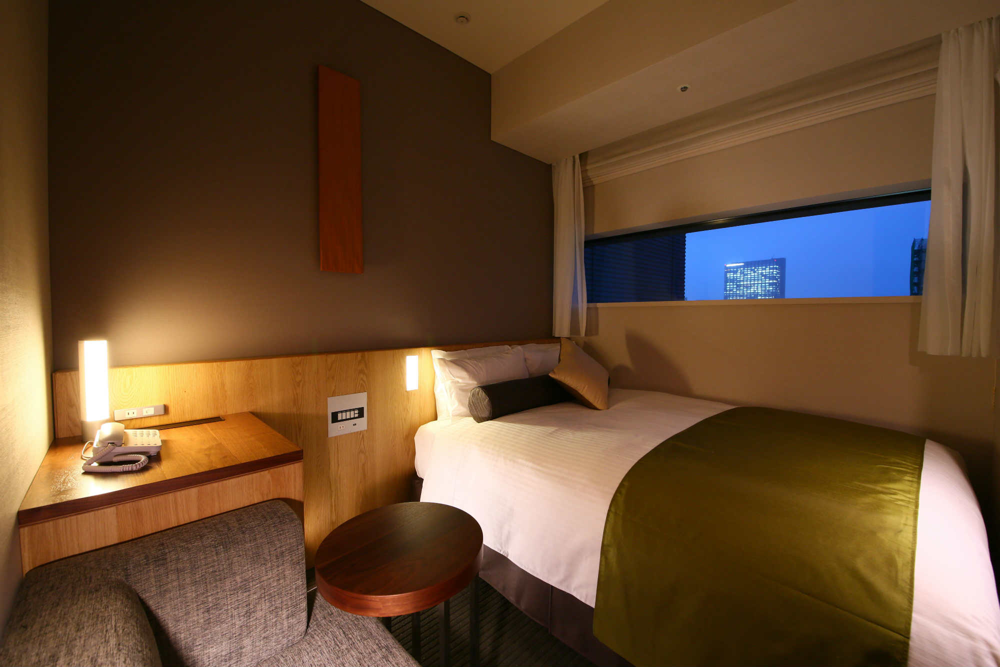
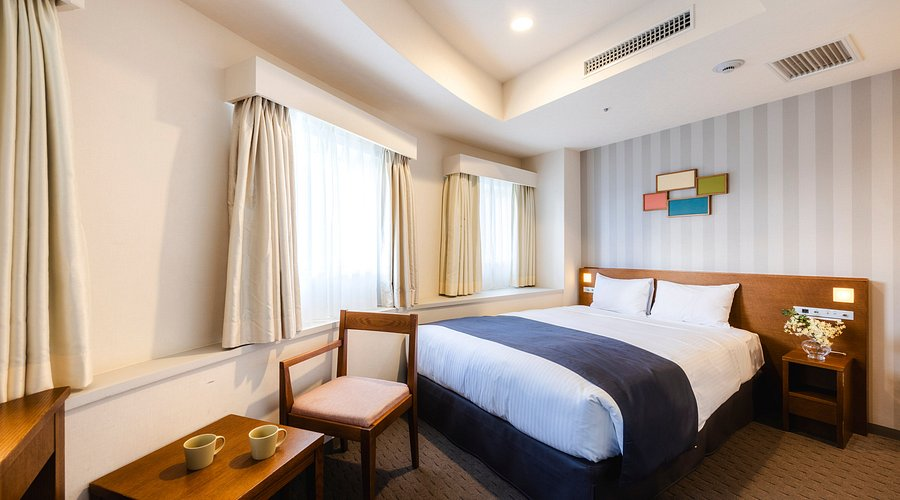

Hospedaje
Hotel Gracery Shinjuku
Tipo de alojamiento: Hotel 4 estrellas.
Incluido en: Paquete Premium.
Ubicación: Kabukicho, distrito de Shinjuku, Tokio. Zona céntrica con acceso a la estación Shinjuku (línea JR Yamanote) a aproximadamente 5 minutos caminando.
Tipo de habitación: Habitación estándar con baño privado.
Servicios incluidos:
- WiFi gratuito
- Aire acondicionado y calefacción
- Baño privado con amenidades
- Recepción 24 horas
- Servicio de limpieza diario
- Restaurante dentro del hotel
- Elevador
Check-in: 14:00–15:00 hrs
Check-out: 11:00 hrs
Costo estimado por 4 noches: $10,000–$12,000 MXN por persona.

Shinjuku Washington Hotel
Tipo de alojamiento: Hotel 3–4 estrellas.
Incluido en: Paquete Estándar.
Ubicación: Nishi-Shinjuku, Tokio. Conectado a la estación Tochomae (línea Toei Oedo) y a 8–10 minutos de la estación Shinjuku.
Tipo de habitación: Habitación individual o doble con baño privado.
Servicios incluidos:
- WiFi gratuito
- Recepción 24 horas
- Restaurantes y cafeterías dentro del hotel
- Máquinas expendedoras y lavandería de autoservicio
- Aire acondicionado y calefacción
- Elevador
Check-in: 14:00 hrs
Check-out: 11:00 hrs
Costo estimado por 4 noches: $9,000–$11,000 MXN por persona.

Higashi-Shinjuku
Tipo de alojamiento: Departamento privado tipo estudio (Airbnb).
Disponible como: Opción alternativa económica fuera del paquete hotelero.
Ubicación: Higashi-Shinjuku, a 3 minutos caminando de la línea Toei Oedo y con acceso a múltiples estaciones cercanas.
Capacidad: 2 huéspedes.
Distribución: 1 habitación, 2 camas individuales y 1 baño privado.
Incluye:
- WiFi
- Cocineta equipada (refrigerador, microondas y estufa)
- Baño privado con amenidades
- Aire acondicionado
- Elevador
- Toallas y ropa de cama incluidas
Check-in: 15:00 hrs
Check-out: 10:00 hrs
Costo estimado por 4 noches: $6,780 MXN para 2 personas.